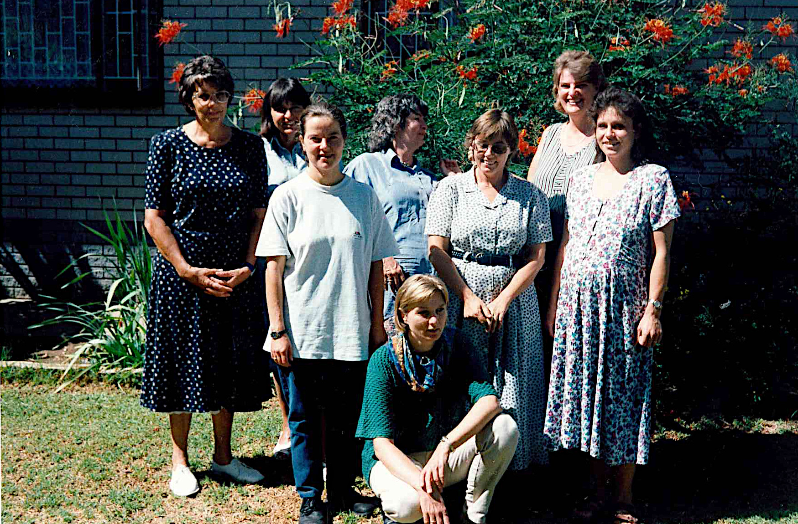

1977-1980
50 Jahre Stadtmission Windhoek
1981-1990
50 Jahre Stadtmission Windhoek

Hochzeit Horst und Monika Pietsch
1991-2000
50 Jahre Stadtmission Windhoek

Frauenstunde Stadtmission 1997-98

Konfirmation mit Johannes und Siegfried Eherler. 1.11.1998
2001-2010
50 Jahre Stadtmission Windhoek
2010-2019
50 Jahre Stadtmission Windhoek

40 Jahre Stami Hannes und Hanni

Einzug Markus Obländer 2016

Gemeinsames Mittagessen 2017

Rudi Penzhorn Mai 2018

Rudi Penzhorn Ordinierung mit Wieland Müller Februar 2017

Schön geschmückter Saal 2016
2021-2025
50 Jahre Stadtmission Windhoek

Einschulungsgottesdienst 14. Jan 2024